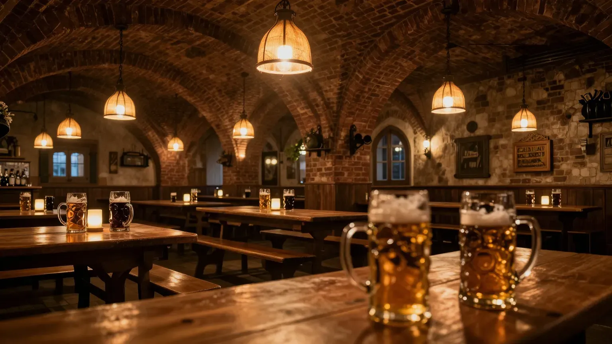
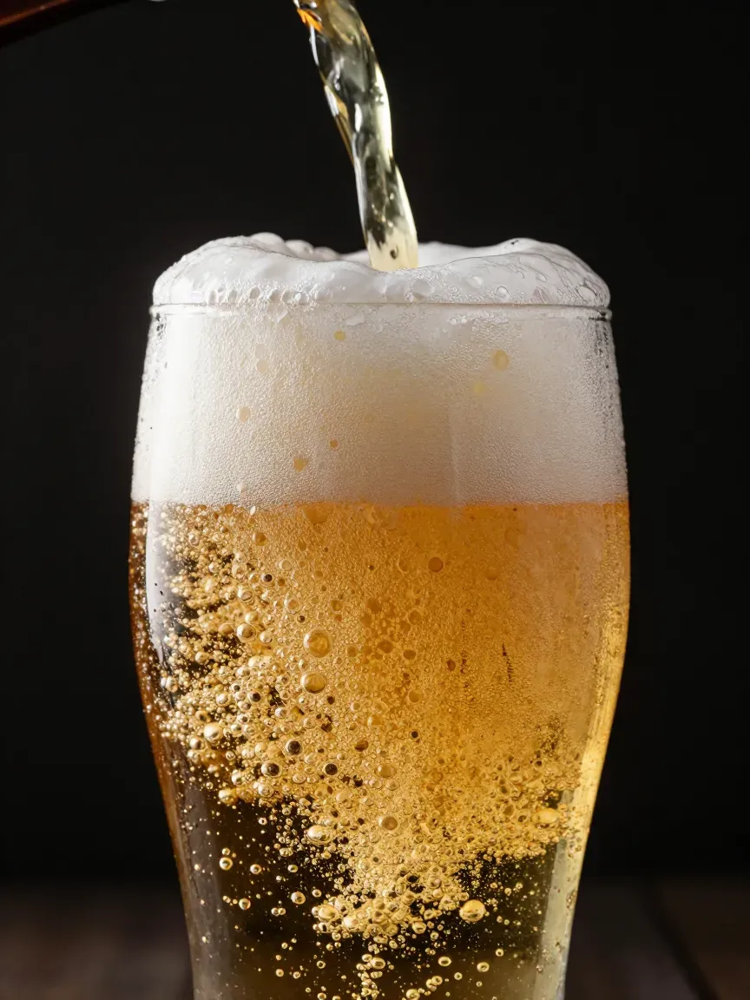
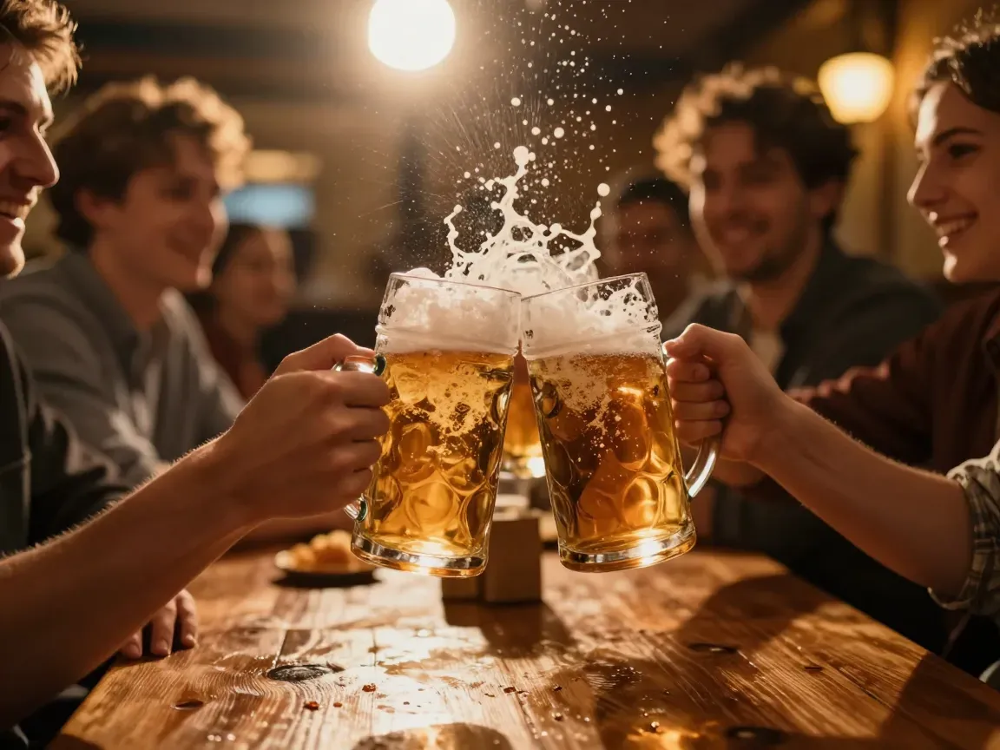

Баварская пивная · с открытия до последней кружки
Пиво, как в Мюнхене. Только ближе.
Литровые кружки, хрустящие брецели и рулька, которая готовится шесть часов. Двенадцать сортов на кране — сваренных по Закону о чистоте пива 1516 года.
1516
год Закона о чистоте пива
12сортов
на кране каждый день
6часов
томится наша рулька
1000мл
в настоящей кружке Maß

Reinheitsgebot · 1516
Четыре ингредиента.
Ноль компромиссов.
Баварский закон о чистоте пива разрешает только воду, солод, хмель и дрожжи. Мы держимся его спустя пять столетий — потому что честному пиву нечего скрывать. Каждая кружка наливается в три приёма, ровно семь минут, чтобы пена стояла шапкой.
H₂O
Вода
Мягкая, как в Альпах
Malz
Солод
Ячменный и пшеничный
Hopfen
Хмель
Из долины Халлертау
Hefe
Дрожжи
Живые, верхового и низового брожения
Как рождается кружка
01
Затор
Солод смешивают с мягкой водой и медленно нагревают — крахмал превращается в сахар.
02
Варка с хмелем
Сусло кипит, хмель из Халлертау отдаёт горчинку и аромат.
03
Брожение
Дрожжи работают неделями в холоде. Пиво созревает спокойно, без спешки.
04
Розлив — и Prost!
Наливаем в три приёма, чтобы пена встала шапкой. Кружка ваша.
Шесть сортов —
шесть характеров
Листайте вниз — полка едет

Каждый вечер — повод
Здесь чокаются громче, чем говорят
«Пиво — это доказательство того, что жизнь можно сделать чуть лучше, если сесть за один длинный стол»
немецкое слово, которое не переводится — его надо почувствовать
Reservierung
Ваш стол
уже ждёт
По пятницам и субботам свободных мест к восьми вечера не остаётся. Забронируйте заранее — первую кружку нальём, как только войдёте.
[АДРЕС БАРА] [ТЕЛЕФОН] · ежедневно 12:00 — 02:00Prost!
Заявка принята. Мы перезвоним, чтобы подтвердить бронь.